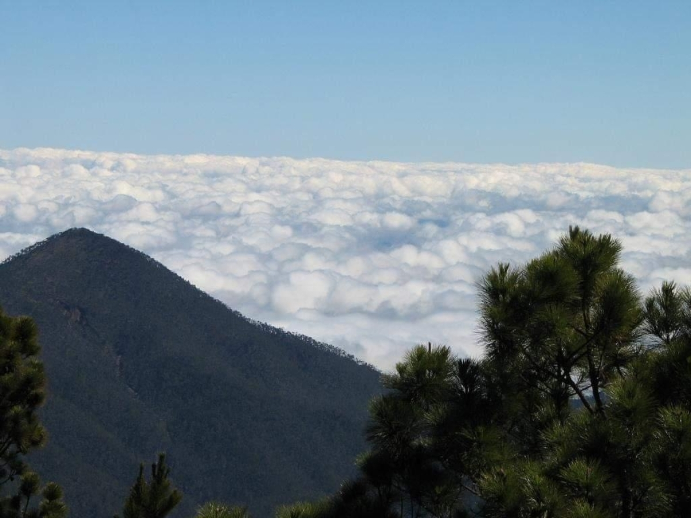

explore
Pico Duarte
Con una altitud de 3.087 metros, el Pico Duarte es el punto más alto del Caribe. Ofrece vistas impresionantes y una experiencia única. Para subir al Pico Duarte, se necesita un permiso especial y es recomendable hacerlo con un guía experimentado.